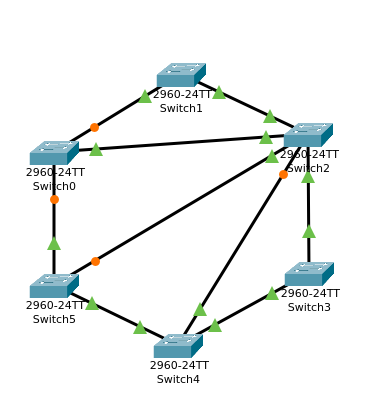

Netzwerktopologien
ITT-Netwerke
Sebastian Meisel
Einführung
Mit Topologie wird beschrieben, wie Computersysteme in einem Netzwerk miteinander verbunden werden.
Abbildung 1: Peer-to-Peer-Netzwerk
Die einfachste Topologie haben wir bereits kennengelernt: Bei Peer-to-Peer-Netzwerk werden zwei Computer direkt miteinander verbunden.
Kabelgebundene Topologien
Daisy-chain (veraltet)
Abbildung 2: Daisy-chain-topologie
Ring-Topologie (veraltet)
Abbildung 3: Ring Topologie
Bustopologie (veraltet)
Abbildung 4: Bustopologie
Stern-Topologie
Abbildung 5: Stern-Topologie
Baumtopologie
Abbildung 6: Baumtopologie
Ringerweiterte Baumtopologie
Abbildung 7: Ringerweiterte Treetopologie
Meshtopologien

Abbildung 8: Teilmesh-Topologie
Full mesh
Abbildung 9: Full mesh
Kabellose Topologien
Ad-hoc vs. Infrastruktur
Mesh
Ein Mesh ist bei kabellosen Netzwerken (vor allem WLANs) etwas anderes als in kabelgebundenen Netzwerk.
Hier sind Accesspoints in einer Mesh-Topologie kabellos verbunden, bilden aber ein gemeinsames Netzwerk, sodass sich andere Geräte wie Smartphones dynamisch mit jedem dieser Accesspoints verbinden können, um stets die beste Empfangsleistung zu haben
Zelltopologie

Abbildung 12: Zelltopologie